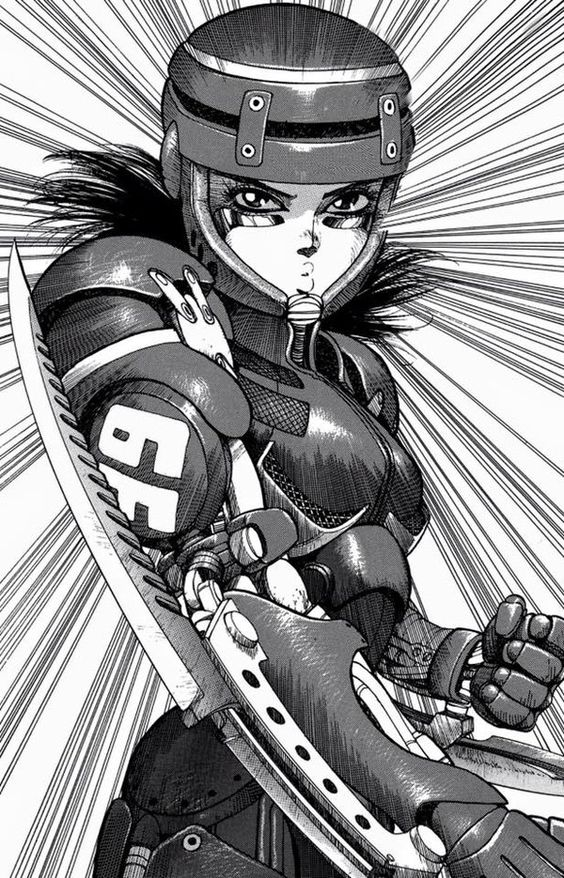
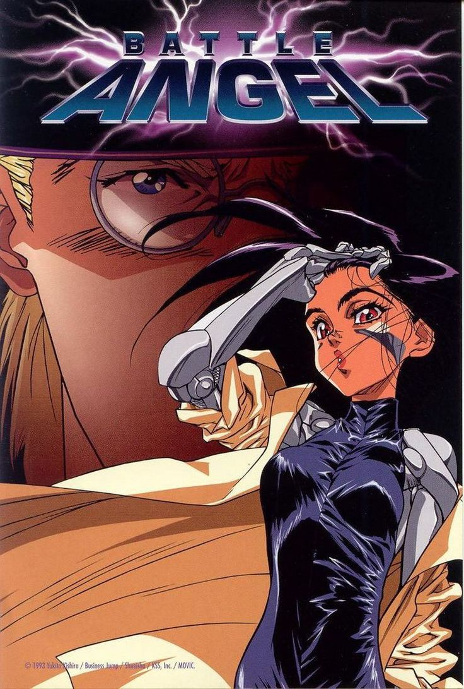
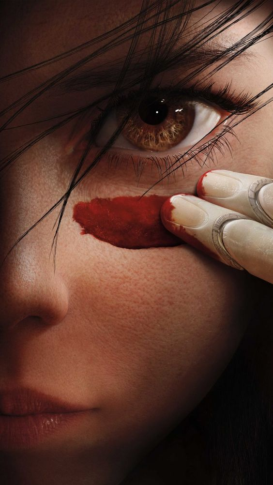

GUNNM: ¿Que paso?
Este manga no es tan conocido, lo cual es triste ya que es uno de los pilares de su genero, hay varias razones por las que nunca hubo una nueva adaptacion animada ademas de los ovas de 1997, una de ellas era el desinteres del autor para supervisar una, segun lo que dijo en una entrevista estaba muy ocupado serializando el manga para que no haya problemas con la editorial, seguido de ellos, digamos que es un manga "dificil" de adaptar.

GUNNM y sus personajes
A lo largo de los años mientras mas avanzaba el manga con Last Order y Mars Chronicle, la gente a podido entender lo bueno que es GUNNM como manga y su excelente calidad de personajes, tanto los mas importantes, los secundarios, y los que solo aparecen en dos paneles.
Ademas, el universo de este comic es muy extenso, su mundo esta cuidadosamente dibujado y pensado, en muchos tomos hay paginas extra (vos elegis si leerlas o no) que explican muchas cosas sobre el mundo y lo devastada que esta la sociedad despues de "La Caida".

Gore + Cyberpunk
Yukito ha demostrado ser muy talentoso a la hora de crear un manga, tanto en el dibujo, las tomas, los fondos y la distribucion de paneles, hacen que GUNNM no solo sea bueno por su historia si no tambien por su increible dibujo. Aunque con los años haya "bajado" la calidad, hoy en dia sigue siendo una obra admirable por el increible esfuerzo del autor para hacer que cada panel se sienta vivo.
GUNNM muestra como es vivir en una distopia como lo es ciudad desperdicio, donde la gente mata para vivir o donde los ricos tienen el completo poder y someten a los pobres como si fueran inferiores, debido a eso, es obvio que este manga debe tener un estilo turbio y grotesco, las peleas son muy realistas, las poses de pelea, las tecnicas, todo cuenta para poder ganar, seguido de un dibujo increible, la brutalidad de las muertes es algo que no se queda atras.
